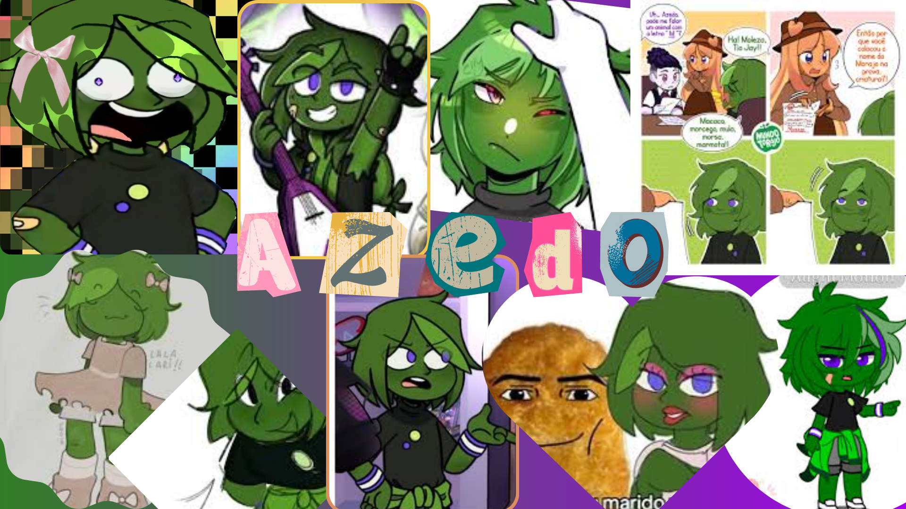

azedo
Azedo com o grupo do Torajo e seu irmão Linn, com quem tem uma relação complicada. E um personagem de Mundo Torajo dublado pela Camie. A fruta do azedo e um limão taiti,ele tem pele verde escura e cabelo verde escura com uma mecha verde,olhos roxos,camisa preta com um verde e outro roxo,tem nos pulsos pulseiras/braçadeiras com 2 linhas roxa e uma branca no meio,casaco verde na cintura,shorts cinza, tenis branco,tem curativos só pra parecer mais legal. A personalidade do Azedo em Mundo Torajo é a de um personagem animado, arrogante e com um ego grande, sempre querendo atenção e se mostrando, mas também é impaciente e se estressa fácil, sendo visto como um pirralho irritante por outros, com um temperamento "azedo" que o faz implicar com todos, especialmente